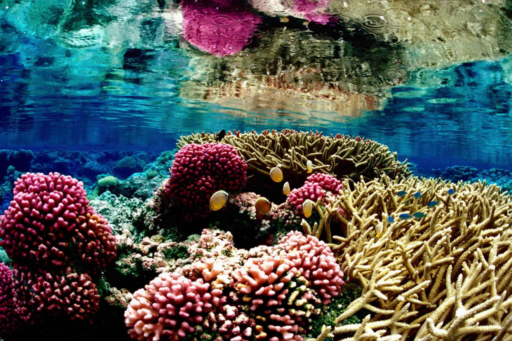
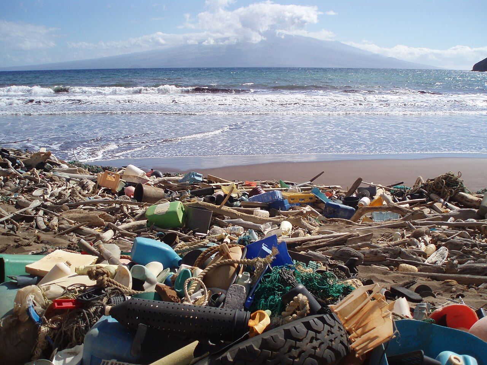

PANEL 03
観察し、記録し、地域で行動する。

保全は身近な場所から
同じ場所を同じ方法で観察すると、小さな変化に気づけます。結果を共有し、地域で続けられる行動へつなげます。
- 使い捨てプラスチックを減らす
- 海岸・河川・街の清掃に参加する
- 持続可能な水産物を調べて選ぶ
- 生物と環境の変化を記録する
- 正確な情報を周囲へ伝える
知る → 調べる → 行動する海の未来は、日常の選択とつながっています。
PANEL 01

海洋生物多様性とは、海に暮らす生物の種類だけでなく、生態系、種、遺伝子の違いと、それらのつながりを含む考え方です。
PANEL 02
気候変動、海洋ごみ、過剰漁獲、生息地の減少などは互いに影響し合い、生態系の回復力を弱めます。

PANEL 03
同じ場所を同じ方法で観察すると、小さな変化に気づけます。結果を共有し、地域で続けられる行動へつなげます。